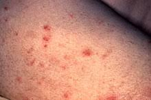

Sífilis

Descripción
La sífilis es una infección de transmisión sexual (ITS) bacteriana que se puede prevenir y curar. Si no se trata, puede causar graves problemas de salud.
Causas
La sífilis es causada por la bacteria Treponema pallidum y se transmite a través del contacto directo con una llaga sifilítica durante las relaciones sexuales. También puede transmitirse de madre a hijo durante el embarazo.
Síntomas
Los síntomas de la sífilis incluyen:
- Llagas indoloras en los genitales, el recto o la boca.
- Erupción cutánea en el cuerpo, especialmente en las palmas de las manos y las plantas de los pies.
- Fiebre y malestar general.
- Pérdida de peso y fatiga.
- Ganglios linfáticos inflamados.
Artículos Relacionados
Para más información, haga clic en el siguiente enlace:
Artículo sobre SífilisVideos Relacionados
Video explicativo de Sífilis:
Para volver a la página principal, pulsa aquí.